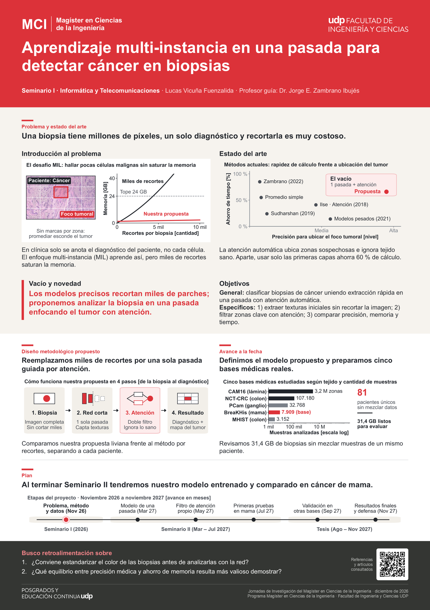

Estudiante: Lucas Vicuña Fuenzalida (Petucode) • Profesor Guía: Dr. Jorge Eduardo Zambrano Ibujés

Afiche científico oficial en formato A1 vertical (59,4 × 84,1 cm, 300 DPI) para la mención Informática y Telecomunicaciones (Sala de Descanso FIC, UDP). Integra la problemática de supervisión débil y VRAM, el proceso de extracción en capas intermedias (≤33 %), el filtrado no-lineal de Gated Attention y las 5 cohortes de validación.
Hipótesis de capas intermedias CNN (≤33%) en pase único sin fine-tuning (Zambrano 2022) vs parches de píxeles (Sudharshan 2019) en BreaKHis.
Fundamentos WSL (Dietterich 1997), dilución en Mean Pooling y muro de VRAM \(O(K^2)\) resuelto en espacio de características.
Compuerta Hadamard \(\tanh(Vh)\odot\sigma(Uh)\) (Ilse 2018) en complejidad lineal \(O(K)\) y explicación "Peras y Manzanas".
5 bases de datos auditadas (81 IDs BreaKHis, 32.7k PCam, 107k NCT-CRC, MHIST DUA, 399 WSIs / 25k .npy CAMELYON16).
7,909 PNG (40x–400x) en 81 pacientes únicos / 82 carpetas (14-13412 DC+LC). Banco directo de capas intermedias y Sudharshan (2019).
32,768 parches 96×96 (50/50) con regla central 32×32, ΔG = −0.100 H&E y benchmark SSL Kang et al. (2023).
107,180 TIF (9 tejidos: TUM, LYM, STR, ADI, BACK...) con evidencia cuantitativa de domain shift Macenko (−30.77 en BACK).
3,152 pólipos HP vs SSA (Wei et al. 2021), purga de CSV sintético corrupto y estudio de consenso médico (4/7 vs 7/7).
399 WSIs (3.17M coords), 111 XML + 25,235 .npy rescatados. Puente directo con CLAM, TransMIL y confiabilidad PLOS 2025.
Consulta el informe técnico exhaustivo de los 7 bugs resueltos, notebooks reproducibles y repositorio oficial.